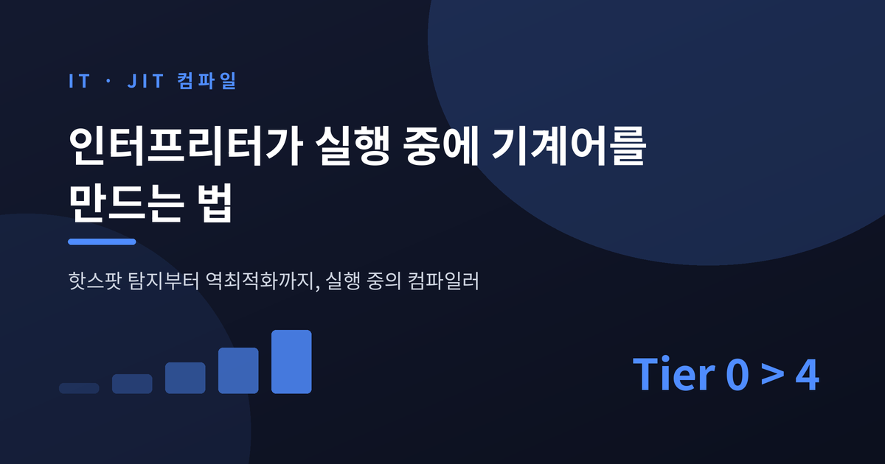
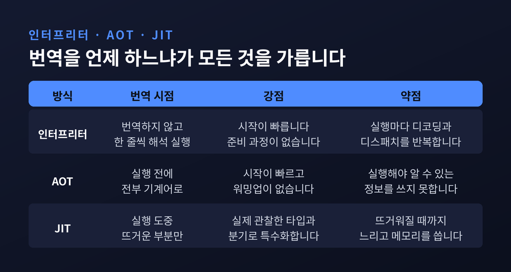
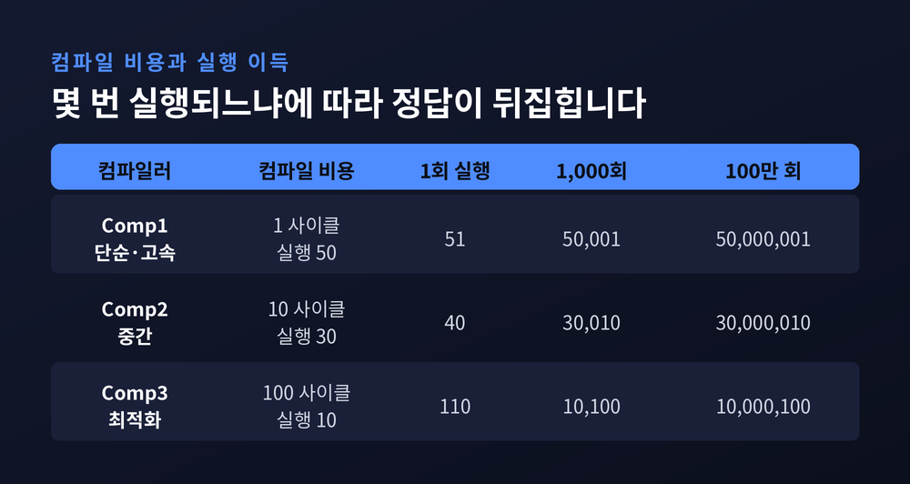
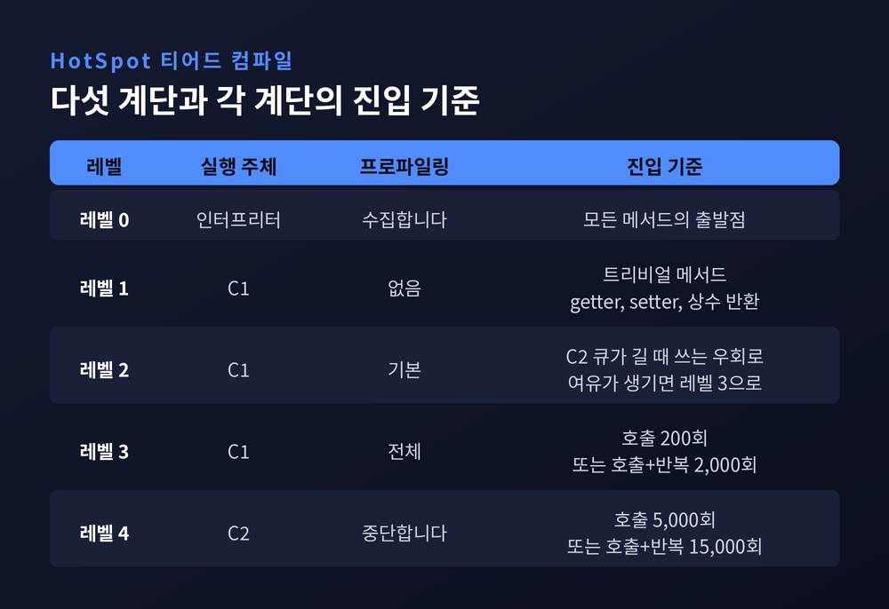
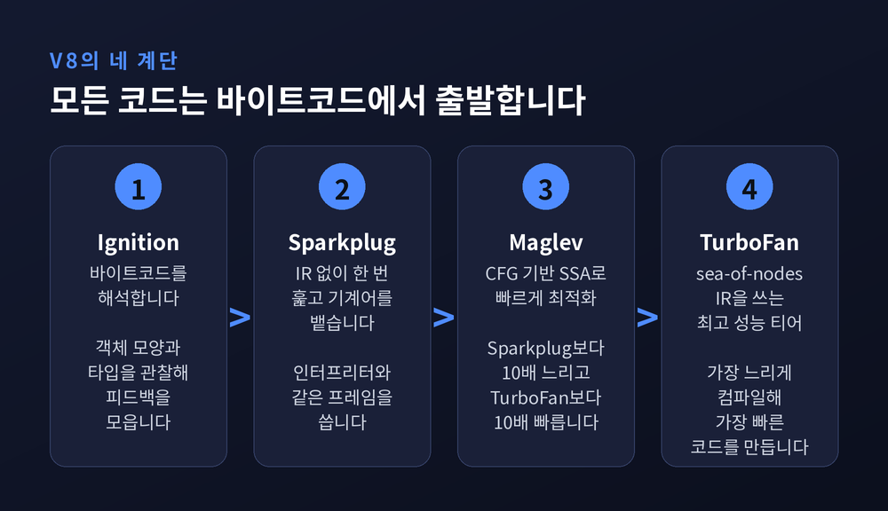
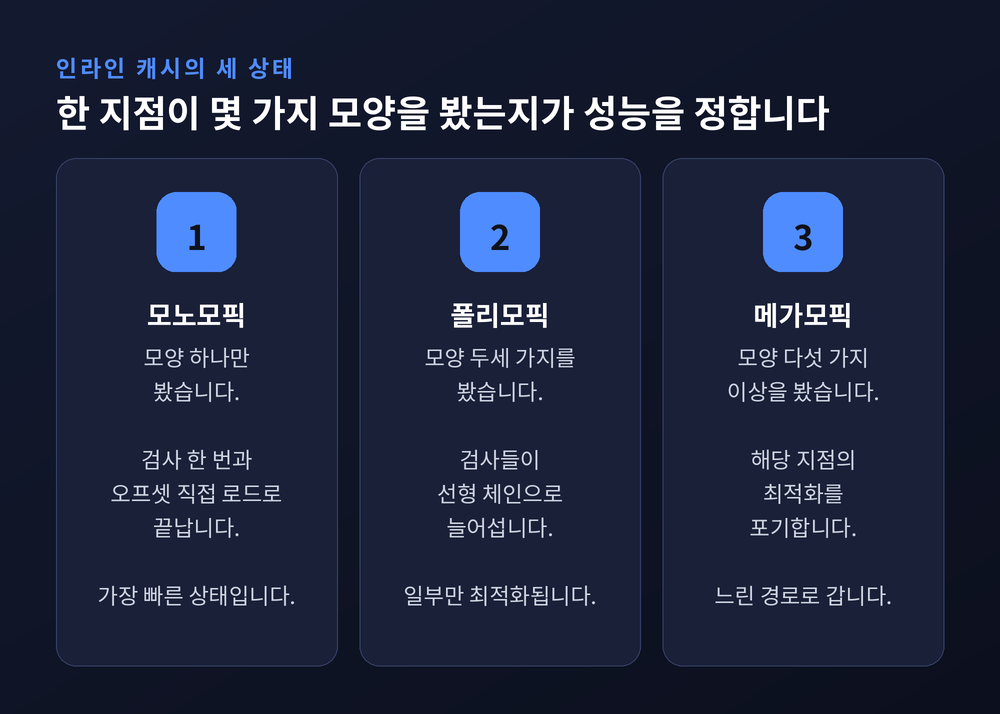
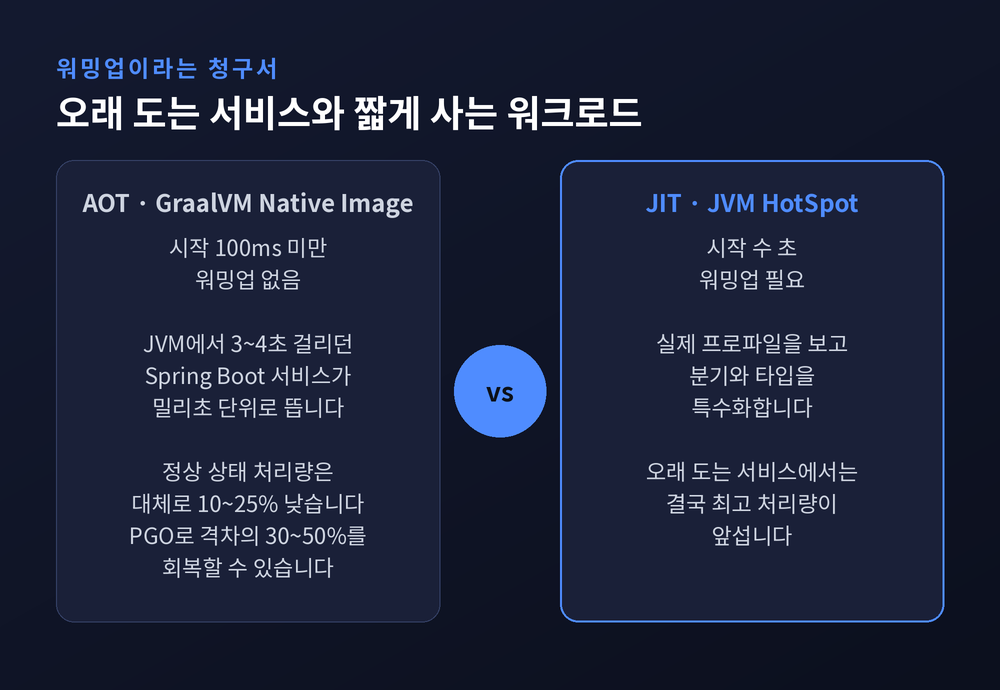

JIT 컴파일 원리 — 인터프리터가 실행 중에 기계어를 만드는 법

이번 글에서는 JIT 컴파일이 어떤 원리로 동작하는지 정리해 보겠습니다. 인터프리터와 AOT 사이에서 JIT가 무엇을 다르게 하는지, 실행 중에 뜨거운 코드를 어떻게 골라내고 어떤 근거로 기계어를 만드는지를 다룹니다. 마지막에는 워밍업이라는 청구서와 AOT의 절충까지 이어보려 합니다.
같은 코드를 실행하는 세 가지 방식
프로그램을 돌리는 방법은 크게 셋입니다.
인터프리터는 바이트코드를 한 줄씩 읽어 그 자리에서 실행합니다. 준비가 필요 없으니 시작이 빠릅니다. 대신 실행할 때마다 같은 일을 반복합니다.
AOT는 실행 전에 전부 기계어로 번역해 둡니다. 시작도 빠르고 워밍업도 없습니다. 대신 실행해 봐야 알 수 있는 정보를 쓸 수 없습니다.
JIT는 그 사이에 섭니다. 일단 해석해서 실행하고, 실행하면서 관찰하고, 관찰한 것을 근거로 도중에 기계어를 만듭니다.

인터프리터가 느린 이유는 게을러서가 아닙니다. V8 팀은 자사 인터프리터를 두고 "고도로 최적화되어 있고 매우 빠르다"고 적으면서도, 제거할 수 없는 본질적 오버헤드가 있다고 인정합니다. 바이트코드를 디코딩하는 비용과 다음 명령으로 디스패치하는 비용입니다.
이 오버헤드는 CPU 입장에서도 손해입니다. 정적 피연산자를 인터프리터가 메모리에서 동적으로 읽어오니 CPU는 값을 추측하거나 멈춰야 합니다. 다음 바이트코드로 넘어가려면 분기 예측이 맞아야 합니다. 예측이 전부 맞아떨어져도 디코딩과 디스패치 코드는 실행해야 하고, 캐시와 버퍼의 자리도 그만큼 잡아먹습니다.
V8은 이 상황을 이렇게 요약합니다. CPU 자체가 기계어를 위한 인터프리터라고요. 그 관점에서 보면 JIT는 함수를 에뮬레이터에서 꺼내 네이티브로 옮기는 일입니다.
1984년, 게으르게 컴파일한다는 발상
JIT는 최근 기술이 아닙니다. 소프트웨어는 1960년대부터 이 계열의 기법을 써 왔습니다.
전환점은 1984년입니다. Deutsch와 Schiffman이 Smalltalk-80 시스템에서 가상머신 코드를 네이티브 코드로 변환하는 기법을 도입했습니다. 이들은 그 과정을 매크로 확장에 비유했습니다.
핵심은 게으름이었습니다. 프로시저를 미리 다 번역하지 않고, 실행이 그 프로시저에 진입하는 순간 번역합니다. 그리고 결과를 캐시해 다음 호출에 재사용합니다.
당시에는 이것을 동적 번역이라 불렀습니다. 목표는 분명했습니다. "직접 해석하고 있다는 착각을 유지한 채, 컴파일된 코드의 속도를 투명하게 제공한다."
이 계보는 Sun의 Self로 이어집니다. Self는 한때 세계에서 가장 빠른 Smalltalk 시스템이었고, 완전한 객체지향 언어로 최적화된 C의 절반 수준 속도를 냈습니다. Self 프로젝트 자체는 중단되었지만, 그 연구는 Java로 흘러 들어갔습니다.
뜨거운 코드를 어떻게 찾아냅니까
JIT의 전제는 두 가지입니다.
첫째, 프로그램 실행 시간의 대부분은 코드의 아주 작은 일부에서 소비됩니다. 둘째, 메서드 하나를 컴파일하는 비용은 그것이 한 번 실행되든 백만 번 실행되든 똑같습니다.
그래서 판단이 필요합니다. 이 메서드가 앞으로 몇 번 실행될 것인가.
Microsoft의 OpenJDK 해설에 실린 가상 수치가 이 저울질을 잘 보여줍니다. 컴파일에 1사이클을 쓰고 실행에 50사이클이 드는 단순 컴파일러와, 컴파일에 100사이클을 쓰고 실행에 10사이클이 드는 최적화 컴파일러를 놓고 봅니다.
한 번만 실행한다면 총비용은 51 대 110입니다. 단순한 쪽이 이깁니다. 백만 번 실행한다면 5,000만 대 1,000만입니다. 최적화한 쪽이 다섯 배 유리합니다.

문제는 이 횟수를 미리 알 수 없다는 데 있습니다. 그것도 그냥 어려운 게 아닙니다. 정지 문제의 변형이라 원리적으로 결정 불가능합니다.
그래서 실무는 우회합니다. 일단 차갑다고 가정하고 인터프리터로 돌립니다. N번 실행되면 앞으로도 최소 N번은 더 실행되리라고 가정합니다.
이 N이 핫스팟 임계치입니다. N을 1로 두면 가정은 거의 맞지만 진짜 뜨거운 코드를 못 고릅니다. N을 백만으로 두면 잘 고르지만 그동안 느린 코드로 백만 번을 돌린 셈입니다.
정답은 없습니다. 경험적으로 정할 뿐입니다. GUI 프로그램은 실행이 코드 전반에 퍼지고 과학 계산은 좁은 영역에 몰립니다. 모든 워크로드에 맞는 이상적 임계치는 사실상 존재하지 않습니다.
HotSpot의 다섯 계단
JVM은 컴파일러 두 개와 인터프리터 하나를 조합해 다섯 단계를 만듭니다. C1은 빠르게 적당한 코드를 뽑고, C2는 느리게 최고 코드를 뽑습니다.

일반 경로는 레벨 0에서 3을 거쳐 4로 갑니다. 인터프리터로 시작해 C1으로 컴파일하며 프로파일을 모으고, 충분히 뜨거워지면 C2가 그 프로파일을 재료로 최고 성능 코드를 만듭니다. 레벨 4는 완전 최적화로 간주되어 프로파일링 수집이 멈춥니다.
임계치는 단순한 숫자 하나가 아닙니다. 호출 횟수와 루프 반복 횟수를 함께 봅니다. 레벨 3 진입은 호출 200회 또는 호출과 반복의 합 2,000회, 레벨 4 진입은 호출 5,000회 또는 합계 15,000회가 기준입니다.
여기에 Scale이라는 계수가 붙습니다. 컴파일 큐의 부하에 따라 주기적으로 조정됩니다. 즉 임계치 자체가 고정값이 아닙니다.
정책은 더 세밀합니다. C2 큐가 길면 레벨 3 대신 레벨 2를 고릅니다. 전체 프로파일링을 켠 레벨 3 코드는 레벨 2보다 대략 30% 느리기 때문입니다. 긴 큐를 기다리는 동안 느리게 도느니, 일단 레벨 2로 가고 여유가 생기면 다시 프로파일링을 시작하자는 판단입니다.
상수를 반환하거나 getter, setter처럼 사소한 메서드는 아예 레벨 1에 고정합니다. C1으로 최적화해 봐야 결과가 같기 때문입니다.
메서드는 차가운데 그 안의 루프만 뜨거운 경우도 있습니다. 이때는 OSR이 나섭니다. 실행 중인 함수를 실행 도중에 바꿔치기해서, 핫 루프를 그것을 담고 있는 메서드와 독립적으로 컴파일합니다.
이 계층이 정말 필요한지는 실험으로 확인됩니다. Microsoft가 잰 수치를 보면, HelloWorld 하나를 인터프리터만으로 돌릴 때와 기본 설정으로 돌릴 때가 똑같이 0.020초입니다. 그런데 인터프리터를 끄고 컴파일만 쓰게 하면 0.890초가 됩니다. 약 40배 느려집니다.
이유는 명확합니다. 대부분의 메서드는 컴파일 비용을 회수할 만큼 실행되지 않습니다.
V8의 네 계단
브라우저는 사정이 더 급합니다. 사이트를 여는 짧은 세션에서는 최적화 컴파일러가 일할 기회조차 오지 않습니다.
그래서 V8은 계단을 촘촘히 놓았습니다.

Sparkplug는 2021년 V8 9.1에 들어갔습니다. 특이한 점은 중간 표현을 아예 만들지 않는다는 것입니다. 바이트코드 위를 한 번 선형으로 훑으며 곧바로 기계어를 뱉습니다. 컴파일러 전체가 사실상 for 루프 안의 switch 문 하나입니다.
빠른 이유가 하나 더 있습니다. 소스가 아니라 바이트코드에서 컴파일합니다. 변수 해석이나 구조분해 디슈거링 같은 어려운 일은 앞 단계가 이미 끝냈으니, V8의 표현을 빌리면 Sparkplug는 "치팅"을 하는 셈입니다.
프레임 설계도 영리합니다. Sparkplug는 인터프리터와 호환되는 스택 프레임을 유지합니다. 인터프리터가 레지스터 값을 저장하는 자리에 똑같이 저장합니다. 덕분에 디버거, 프로파일러, 예외 스택 언와인딩이 거의 수정 없이 동작하고, OSR도 프레임 변환 비용 없이 이뤄집니다.
효과는 분명했습니다. Ignition 단독 대비 JetStream 45%, Speedometer 41% 개선. 도입 당시 실제 사이트 재생 벤치마크에서 V8 메인 스레드 시간이 5~15% 줄었습니다.
Maglev는 2023년 12월 Chrome M117에 들어갔습니다. 성격이 다릅니다. Sparkplug와 TurboFan 사이에서 "충분히 좋은 코드를 충분히 빠르게" 만드는 자리입니다.
숫자로 말하면 이렇습니다. Sparkplug보다 대략 10배 느리고, TurboFan보다 10배 빠릅니다.
Maglev는 그래프를 만드는 도중에 런타임 피드백을 즉시 반영합니다. o.x를 만났는데 피드백상 o가 늘 같은 모양이었다면, 모양을 검사하는 노드 하나와 오프셋으로 바로 읽는 값싼 로드 노드를 만듭니다. 그리고 "이제 o의 모양을 안다"고 메모해 두어 이후 검사를 생략합니다.
상수처럼 굳어진 전역 값은 아예 컴파일 시점에 읽어 기계어에 박아 넣습니다. 런타임이 그 값을 바꾸면 그때 기계어를 무효화합니다.
숫자 표현도 손봅니다. JS의 숫자는 명세상 64비트 부동소수점이지만 실제로는 배열 인덱스 같은 작은 정수가 많습니다. V8은 이를 31비트 태그드 정수로 인코딩해 메모리와 연산 비용을 아낍니다.
이 층 하나가 만든 차이는 속도만이 아닙니다. Maglev가 빠르게 처리하는 덕에 TurboFan 호출을 더 미룰 수 있게 되었습니다. M1과 M2 맥북에서 잰 프로세스 에너지 소비가 JetStream에서 3.5%, Speedometer에서 10% 줄었습니다.
계단 설계는 지금도 손질 중입니다. Intel이 Google V8 팀과 함께 만든 Profile-Guided Tiering은 첫 실행에서 티어업과 티어다운을 전부 분석해 캐시하고, 다음 실행부터 함수별로 티어링을 맞춤 조정합니다. Speedometer 3 점수가 약 5% 올랐습니다.
타입을 알면 코드가 짧아집니다
JIT가 인터프리터를 이기는 진짜 무기는 속도가 아니라 정보입니다.
동적 타입 언어에서 obj.x는 무거운 일입니다. 객체마다 프로퍼티가 어디 있는지 다르니 매번 찾아야 합니다.
그래서 V8은 객체에 hidden class를 붙여 프로퍼티 위치를 오프셋으로 고정합니다. 그리고 각 접근 지점마다 어떤 모양을 봤는지 기록해 둡니다. 이것이 인라인 캐시입니다.

한 지점이 모양 하나만 봤다면 모노모픽입니다. TurboFan은 검사 한 번과 직접 오프셋 로드로 끝냅니다. 두세 가지를 봤다면 폴리모픽이고, 검사들의 선형 체인이 생깁니다. 다섯 가지 이상을 봤다면 메가모픽입니다. 이 경우 해당 지점의 최적화는 포기합니다.
JVM 쪽 무기는 인라이닝입니다. 바이트코드 35바이트 미만인 메서드는 항상 인라이닝하고, 325바이트 미만이면 호출이 뜨거울 때 인라이닝합니다.
이 선은 생각보다 아슬아슬합니다. 325바이트 아래에 편히 있던 핫 메서드가 로깅 한 줄이나 계측 프로브 하나 때문에 선을 넘어 인라이닝 대상에서 빠질 수 있습니다.
C2가 프로파일로 하는 일은 더 과감합니다. if-else에서 then 쪽만 실행되었다면 else 블록을 아예 컴파일하지 않기도 합니다. 참조 변수가 한 번도 null이 아니었다면 null이 아니라고 가정하고 최적화합니다. 클래스에 서브클래스가 없다면 그 메서드 호출을 인라이닝합니다.
틀려도 되는 최적화
여기서 당연한 의문이 생깁니다. 저 가정들이 깨지면 어떻게 됩니까.
깨집니다. 자주 깨집니다. 늘 참이던 조건이 거짓을 반환하기 시작하고, 발생한 적 없던 예외가 터지고, null이 아니던 변수에 null이 들어오고, 새 클래스가 로드되어 단순하던 계층이 복잡해집니다.
그래서 역최적화가 있습니다.
V8은 되돌릴 수 있는 노드마다 추상 인터프리터 프레임 상태를 붙여 둡니다. 이 상태는 코드 생성 시 메타데이터가 되어, 최적화된 상태에서 비최적화 상태로 가는 지도 역할을 합니다. 가정이 깨지면 역최적화기가 이 지도를 읽어 인터프리터 프레임을 재구성하고 Ignition에서 실행을 재개합니다.
JVM은 같은 일을 프레디케이트와 트랩으로 합니다. C2는 가정이 유효한지 검사하는 프레디케이트를 컴파일된 코드에 심어 둡니다. 거짓이 되면 트랩이 JVM 내부를 호출해 어떤 가정이 깨졌는지 알립니다. HotSpot은 그 정보로 컴파일본을 폐기할지, 인터프리터로 넘길지 결정합니다.
이 구조의 핵심은 한 줄로 압축됩니다.
"투기가 실패해도 틀린 결과가 나오지 않습니다. 느려질 뿐입니다."
결과가 아니라 속도만 걸려 있으니, 공격적으로 가정해도 안전합니다.
Maglev가 이 성질을 잘 활용합니다. 컴파일이 워낙 빠르니 아직 안정되지 않은 피드백에 기대어 컴파일했다가 되돌리더라도 손해가 크지 않습니다. 그래서 TurboFan보다 훨씬 이른 시점에 배치할 수 있었습니다.
워밍업이라는 청구서
JIT의 값은 공짜가 아닙니다. 뜨거워질 때까지 느립니다.
예전에는 이 비용이 문제가 되지 않았습니다. 서버는 한 번 띄우면 몇 주씩 돌았고, 워밍업 몇 초는 반올림 오차였습니다. 지금은 다릅니다. 서버리스 함수는 요청 하나 처리하고 사라집니다. 컨테이너는 트래픽에 따라 수시로 뜨고 집니다.

그래서 AOT가 다시 호출됩니다. GraalVM Native Image는 JVM에서 3~4초 걸리던 Spring Boot 서비스를 100밀리초 미만에 띄웁니다. 워밍업 단계 자체가 없습니다.
다만 대가가 있습니다. 정상 상태 처리량은 대체로 10~25% 낮습니다. 런타임 프로파일 없이 보수적으로 최적화했기 때문입니다. PGO를 적용하면 이 격차의 30~50%를 회복해 JIT 최고 성능의 5~15% 이내까지 좁힐 수 있다고 보고됩니다.
수치는 워크로드에 따라 편차가 큽니다. 단정하기보다 경향으로 보시는 편이 안전합니다.
기준선은 그래도 분명합니다. 몇 시간에서 며칠씩 도는 서비스라면 JIT가 결국 앞섭니다. 짧게 살다 가는 워크로드라면 네이티브 이미지가 압도합니다.
정리하면 이렇습니다.
JIT는 마법이 아닙니다. 미래를 알 수 없다는 사실을 인정하고, 과거를 관찰해 미래를 추측한 다음, 추측이 틀렸을 때 되돌아올 길을 미리 깔아두는 공학입니다. 임계치도 계층 수도 인라이닝 한계도 전부 경험적으로 정한 타협입니다.
그러니 이 숫자들에 절대적 의미를 두기는 어렵습니다. 플랫폼과 JDK 버전에 따라 달라지고, 벤치마크가 실제 서비스를 대변하지도 않습니다.
다만 방향은 알아둘 만합니다. 코드가 왜 처음엔 느리다가 나중에 빨라지는지, 왜 어떤 함수는 끝까지 느린지, 왜 로깅 한 줄이 성능을 바꾸는지가 여기서 설명됩니다.
프로그램이 실행되는 동안 무엇이 벌어지느냐고 물으신다면, 저는 컴파일러가 아직 일하고 있다고 답하겠습니다.